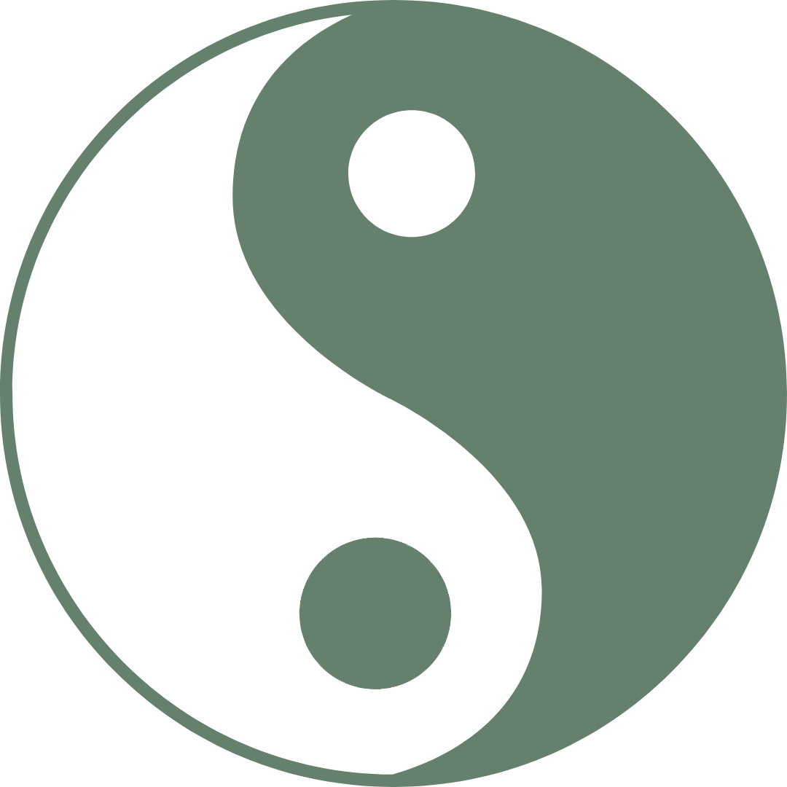

Themes of Inquiry
Dive into the fundamental questions and enduring ideas that shape our understanding of the world.
Philosophy of Religion
Exploring faith, spirituality, the nature of divinity, and the human search for meaning.
Ethics & Morality
The study of right and wrong, virtue, duty, and the foundations of human conduct.
Ancient Wisdom
Timeless insights from Greek, Roman, and other classical philosophical traditions.

Eastern Philosophy
Exploring thought systems from Asia, including Buddhism, Taoism, and Vedanta.